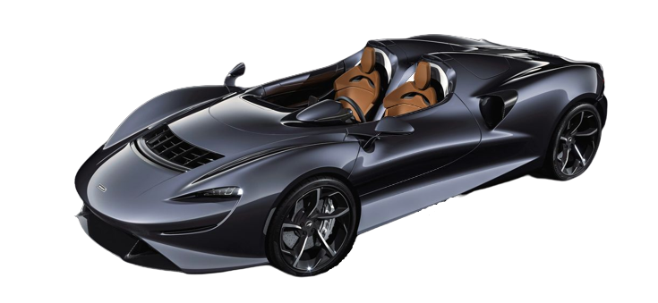

-
Nuestros coches
Mclaren Bugatti Maserati Bentley Ferrari
- Seguros
- Sobre nosotros
- Contacto
McLaren 650S / 675LT250.000€

Consumo Aceleración Potencia Velocidad máxima 11'7 l/100km De 0 a 100km/h en 2'9s 641 - 675 CV 330 km/h
Información adicional:El McLaren 650S es un automóvil deportivo diseñado y producido por el fabricante británico McLaren Automotive, de 2014 a 2017. Se anunció en febrero de 2014 como un nuevo modelo, pero basado en el ya existente MP4-12C con un 25% de partes, con el que comparte el chasis de fibra de carbono reforzada con polímero.
Es la una evolución como segunda generación del MP4-12C. Fue diseñado inicialmente para ser ofrecido simultáneamente junto con el MP4-12C, pero su descenso en ventas provocó que el fabricante lo comercializara como su reemplazo.

McLaren Elva1.750.000€
Consumo Aceleración Potencia Velocidad máxima 15 l/100km De 0 a 100km/h en 6,7s 815 CV 327 km/h
Información adicional:El McLaren Elva es un roadster que pertenece a la gama de modelos Ultimate Series. Su producción está limitada a 149 unidades, que son bastantes menos de las 399 que McLaren tenía inicialmente planeadas cuando, allá por noviembre de 2019, mostró por primera vez el Elva a la sociedad.
Tiene dos asientos y un motor de gasolina de 815 CV. La carrocería carece de techo y ventanillas y se puede pedir con o sin parabrisas. La versión sin parabrisas es la «original», en el sentido de que fue la primera que se presentó, en 2019. La versión con parabrisas se anuncia un año y medio después, en mayo de 2021, si bien las primeras entregas a clientes no se harán efectivas hasta finales del citado año. Elva es el nombre de un coche de carreras con el que compitió en la década de los años sesenta.
McLaren P11.100.000€
Consumo Aceleración Potencia Velocidad máxima 16 l/100km De 0 a 100km/h en 2,8s 737 CV 350 km/h
Información adicional:El McLaren P1 es un superdeportivo de 1,20 metros de altura que entra en escena para hacer palidecer al Ferrari LaFerrari y al Porsche 918 Spyder. Equipa un motor eléctrico de 179CV y 260 Nm que McLaren ha incorporado junto al bloque V8 de 3,8 litros, doble turbo y 737CV. Las dos mecánicas, juntas, llegan a los 916CV, y cuando trabajan al unísono son imponentes: 2,8 segundos de 0 a 100 km/h, 6,8 para alcanzar los 200 km/h y, 16,5 segundos después, supera los 300 km/h.
Pero solo son cifras. Importa mucho más cómo se siente el piloto: como dando vueltas al tambor de una lavadora en modo centrifugado. A quienes no les gusten las montañas rusas, mejor que se abstengan: ponerse al volante del McLaren P1 requiere sangre fría y nervios de acero. Como híbrido enchufable que es, puede circular solo en modo eléctrico, con una autonomía de diez kilómetros, 160 km/h de velocidad máxima y 8,4 segundos para pasar de 0 a 100 km/h.